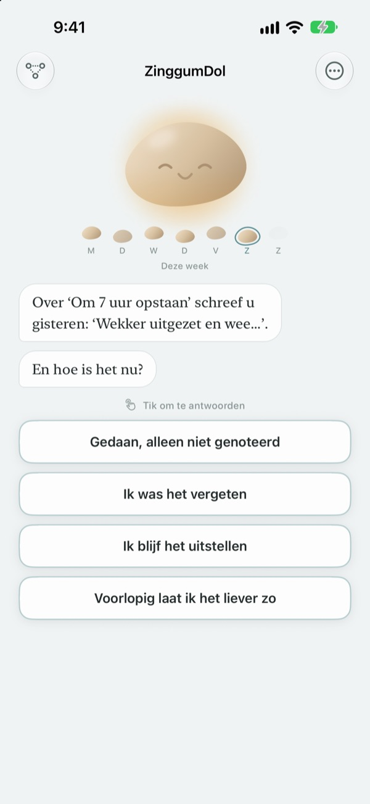
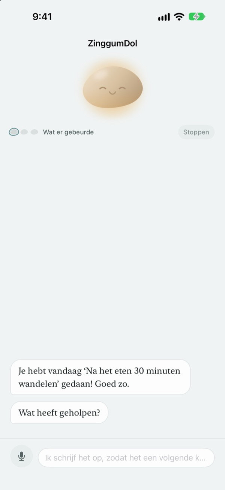
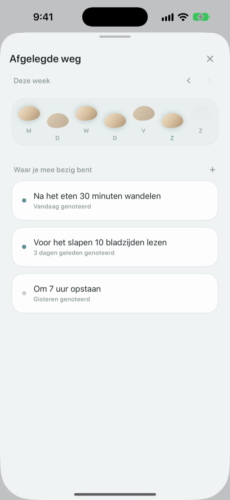
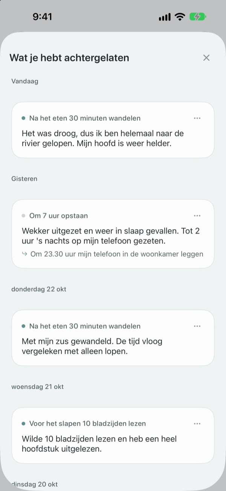

Misstappen is nog niet
in de beek vallen
Op een dag dat je je doel mist, begint de kiezel het gesprek. Hij vraagt wat er gebeurde, niet wat je fout deed, en geeft je de feiten en je gevoel los van elkaar terug.
Praten, schrijven en je weg zien is gratis. Geen account, geen advertenties.

Praat met de kiezel
Je wilde vanavond een wandeling maken en het is er niet van gekomen. Tik een antwoord aan of typ je eigen, en de kiezel reageert precies zoals in de app.
Geef je jezelf de schuld als een dag anders loopt?
Op de avond dat je de training oversloeg, denk je vaak eerst: wat is er mis met mij? Kijk je beter, dan moest je overwerken, regende het en was je doodop. ZinggumDol vraagt in aparte stappen wat er gebeurde en hoe je je voelt, en legt die twee naast elkaar. Zie je dat het aan de omstandigheden lag en niet aan je wilskracht, dan vind je de volgende kleine stap makkelijker.
De kiezel begint het gesprek
Stel een doel in en de kiezel houdt de dagen bij dat het lukte en de dagen dat je vastliep. Glipt er een dag door, dan vraagt hij ‘wat gebeurde er?’ in plaats van ‘waarom niet?’, en hij weet nog wat je hem de vorige keer vertelde.
Is schrijven je te veel, zeg het dan gewoon hardop. Spraak wordt op je apparaat herkend en opnames worden nooit bewaard.

Je dagen als stapstenen
Elke week ligt er als een rij stapstenen. De dagen waarop je niet stapte, blijven ook liggen; er wordt niets gewist.
Ook met een gat hier en daar zie je dat de weg doorloopt.

Lees terug wat je schreef
Wat er gebeurde, hoe je je voelde en wat je hierna probeert, verzamelt zich op datum. Lees een dag terug waarop je net zo vastliep en je ziet wat hielp.
Een widget laat een woordje van de kiezel zien op je beginscherm, en een herinnering op een tijd die jij kiest nodigt je uit terug te kijken op de dag.

In drie stappen aan de slag
- 1
Schrijf één doel op
Bijvoorbeeld ‘Na het eten 30 minuten wandelen’.
- 2
Open de app aan het eind van de dag
De kiezel vraagt hoe je dag was. Met een herinnering vergeet je het niet.
- 3
Tik of typ een antwoord
Je kunt altijd stoppen met
Voorlopig laat ik het liever zo.
Zo verloopt een gesprek
- Wat er gebeurde
- Alleen de feiten: wat er tussen kwam
- Gevoel
- Hoe je je nu voelt, op een schaal van vijf
- Terugblik
- De kiezel geeft wat er gebeurde en je gevoel apart terug
- Volgende stap
- Je kiest zelf iets kleins, vijf minuten is genoeg
- Afronden
- Op een echt zware dag vraagt hij niets meer en stelt hij rust voor
Je kunt op elk moment stoppen, en wat je tot dan toe zei, blijft bewaard.
Praten en schrijven is gratis. Pro als je meer wilt.
Gratis
- Alle gesprekken met de kiezel
- Tot drie doelen
- Praten in plaats van typen
- Je weg en alles wat je schreef
- Widget en dagelijkse herinnering
- Vergrendeling met code
ZinggumDol Pro
- Zoveel doelen als je wilt
- Kies uit zes kiezelafwerkingen
- Notities exporteren als tekstbestand
Eenmalig kopen en houden. Geen abonnement.
Midden in een gesprek verschijnt nooit een betaalscherm. Op een nieuw apparaat of na opnieuw installeren tik je in Instellingen op Aankopen herstellen.
Veelgestelde vragen
Moet ik elke gemiste dag uitleggen?
Nee. Tik op elk moment op Voorlopig laat ik het liever zo en het gesprek stopt meteen. Wat je tot dan toe zei, blijft bewaard, zodat je later verder kunt.
Ik heb het wel gedaan, maar de app zegt van niet.
Tik op Gedaan, alleen niet genoteerd. De kiezel neemt de correctie aan en vraagt in plaats daarvan wat hielp. Wat werkte, wordt bewaard en komt terug als je de volgende keer vastloopt.
Waar gaat naartoe wat ik hardop zeg?
Je spraak wordt op het apparaat omgezet in tekst en de opname wordt nooit bewaard. Op ondersteunde apparaten worden je zinnen ook leesbaarder gemaakt, ook dat gebeurt op het apparaat.
Hoeveel doelen kan ik hebben?
Drie gratis. Ben je klaar met een doel, gebruik dan Loslaten in Afgelegde weg om plek te maken. Voor meer dan drie heb je ZinggumDol Pro nodig.
Is ZinggumDol Pro een abonnement?
Nee. Je betaalt één keer en houdt het. Op een nieuw apparaat of na opnieuw installeren tik je in Instellingen op Aankopen herstellen.
Kan iemand anders mijn dagboek lezen?
Er is geen account. Je notities staan alleen op je apparaat en in je eigen iCloud, en je kunt de app in Instellingen vergrendelen met een code. Wat je schrijft, gaat nooit naar de ontwikkelaar. Anonieme gebruiksstatistieken kun je in Instellingen uitzetten.
Hoe verander ik het tijdstip van de herinnering?
Bij Dagelijkse herinnering in Instellingen zet je hem aan of uit en kies je de tijd.
Herinnert de kiezel me ook aan wat wél lukte?
Ja. Hij onthoudt wat je hielp, en op een zware dag herinnert hij je aan iets wat je onlangs voor elkaar kreeg.
Hoe wis ik alles?
Tik in Instellingen op Alle notities wissen. Je doelen en notities zijn dan voorgoed weg, ook op andere apparaten die via iCloud zijn gekoppeld. Instellingen en aankopen blijven. Met Pro kun je eerst een kopie bewaren via Notities exporteren.
Hoe neem ik contact op?
Via ‘Feedback sturen’ in de Instellingen van de app, of mail naar het adres hieronder.
Vragen of feedback? Mail naar leeo@kakao.com.